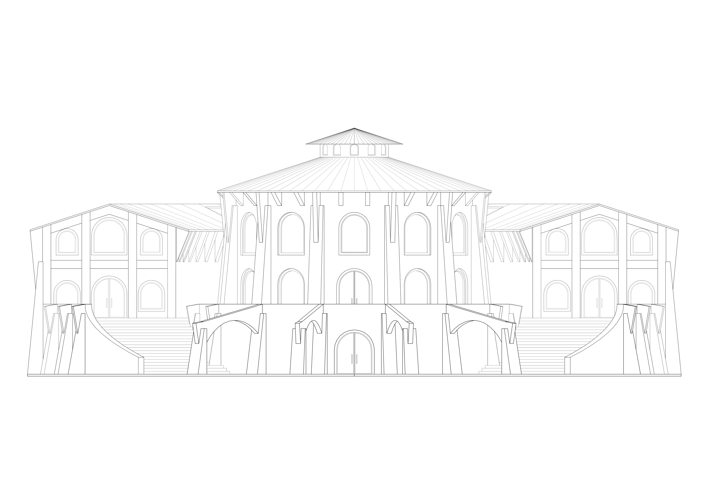

Architecture · Design · Inquiry
Build with the
genius
of the place.
Third-year architecture student at California Baptist University. Interested in regional vernacular architecture, classical tradition, and the built environment as an expression of place and culture.
View Selected Work


About
Architecture should be rooted in tradition, craft, and community, and how we build is inseparable from how we live together.
Currently in my third year at California Baptist University. My work explores regional vernacular architecture, classical tradition, and the built environment as an expression of place and culture.
Full Profile